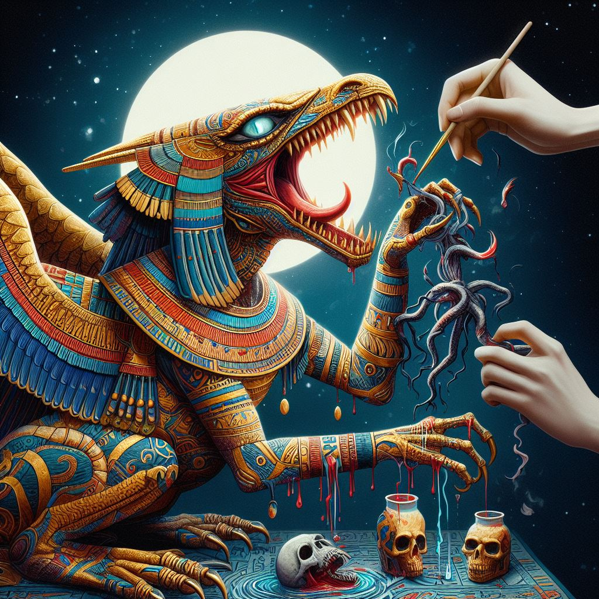

Egyptian mythology is the collection of myths from ancient Egypt, which describe the actions of the Egyptian gods as a means of understanding the world around them. The beliefs that these myths express are an important part of ancient Egyptian religion. Myths appear frequently in Egyptian writings and art, particularly in short stories and in religious material such as hymns, ritual texts, funerary texts, and temple decoration. These sources rarely contain a complete account of a myth and often describe only brief fragments.
The details of these sacred events differ greatly from one text to another and often seem contradictory. Egyptian myths are primarily metaphorical, translating the essence and behavior of deities into terms that humans can understand. Each variant of a myth represents a different symbolic perspective, enriching the Egyptians' understanding of the gods and the world.
Mythology profoundly influenced Egyptian culture. It inspired or influenced many religious rituals and provided the ideological basis for kingship. Scenes and symbols from myth appeared in art in tombs, temples, and amulets. In literature, myths or elements of them were used in stories that range from humor to allegory, demonstrating that the Egyptians adapted mythology to serve a wide variety of purpose.
A mythological chimera composed of the head of a crocodile, the forelimbs of a lion, and the hind limbs of a hippopotamus, Ammit was the personification of the man-eating predators so feared by ancient Egyptians. According to legend, after a person died, the Egyptian god Anubis weighed the deceased's heart on a scale against a single feather from Ma'at, the goddess of truth.
The arch-enemy of Ma'at (the goddess of truth mentioned in the previous slide), Apep was a giant mythological snake that stretched for 50 feet from head to tail (oddly enough, we now have fossil evidence that some real-life snakes, like the allusively named Titanoboa of South America, actually attained these gigantic sizes).
The ancient source of the phoenix myth — at least according to some authorities — Bennu the bird god was a familiar of Ra, as well as the animating spirit that powered creation (in one tale, Bennu glides over the primordial waters of Nun, the father of the Egyptian gods).
A bit like a cross between the Little Mermaid. the Siren of Greek myth, and that creepy girl from the "Ring" movies, El Naddaha has a relatively recent origin compared with the 5,000-year span of Egyptian mythology.